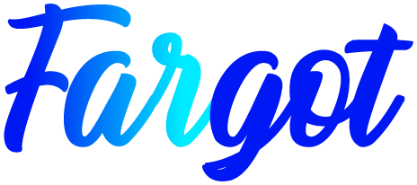

0
objetos seleccionados
Trazados, grupos, textos, símbolos, degradados y máscaras viajan como vectores editables.
Último envío
EstadoAún no has enviado nada

TransferIllustrator → After Effects
Inicia sesión en la app Fargot para usar Fargot Transfer.
Trazados, grupos, textos, símbolos, degradados y máscaras viajan como vectores editables.
Todo se crea con efectos y estilos de capa nativos de After Effects: puedes editarlos y animarlos. Los valores copiados quedan en el comentario de la capa.